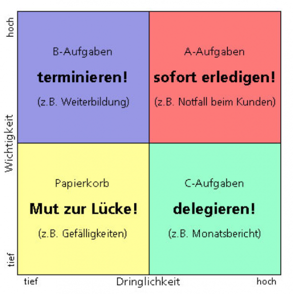
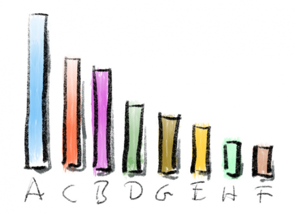
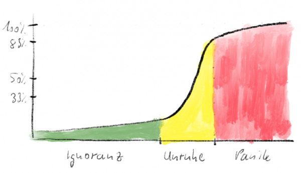
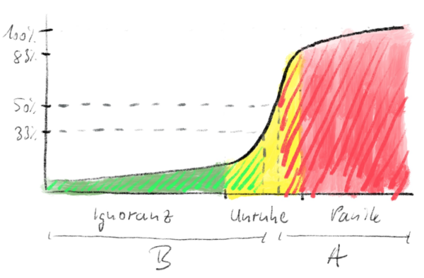

Was ist eigentlich wichtig? – Eisenhower Priorisierung I
Es gibt eine zentrale Technik ~im Zeitmanagement~ in der Aufmerksamkeitsgestaltung, die in Trainings einerseits Aha!-Erlebnisse bei den Teilnehmern hervorruft, andererseits aber bei der praktischen Priorisierung Stirnrunzeln. Das ist die Eisenhower-Matrix.
Sie haben sicherlich auch schon einmal ein Bild dieser Matrix gesehen. Hier ein Beispiel aus dem Internet:

Bildquelle: jobblog.ch
Die Matrix dient der Priorisierung von Aufgaben. Wo eine Aufgabe in Ihrer Prioritätenliste steht, hängt davon ab, wie wichtig und/oder dringend sie ist. Aufgaben im A-Quadranten stehen darin ganz oben, weil sie sowohl hohe Wichtigkeit wie auch hohe Dringlichkeit haben.
Das klingt doch auch ganz plausibel, oder? Dringende Aufgaben sind schon gruselig, aber wenn die auch noch wichtig sind… Dann ist Holland in Not! Dann müssen Sie ranklotzen und diese Aufgaben erledigen.
Diese Differenzierung in die Hand zu bekommen, ist ein Schritt voran bei der Ordnung des Aufgabenchaos, in dem viele versinken. Und wenn ich dann bitte, mal Beispiele für Aufgaben in den vier Quadranten zu sammeln, die Theorie also praktisch auf den eigenen Arbeitsalltag anzuwenden, stellen sich regelmäßig hübsche Aha!-Erlebnisse ein. Wie gerne ich die leuchtenden Augen bei den Trainingsteilnehmern dann sehe… Es ist eine Freude.
So weit, so gut. Denn nach ersten Anfangserfolgen wird das Ausrufezeichen in den Gesichtern durch ein Fragezeichen abgelöst. Will man mit der Eisenhower-Matrix nämlich ernsthaft arbeiten, muss man über Anfangserfolge aufgrund eines Bauchgefühls hinaus kommen.
Priorisierung hat ein intuitives Element, doch die Frage ist, worin genau das besteht. „Ich glaube, Aufgabe X ist wichtiger als Aufgabe Y…“ ist nur für den Einstieg ausreichend. Systematik, d.h. Konsistenz und Nachvollziehbarkeit sieht anders aus.
Für mehr Systematik finde ich es wichtig [sic!], die Begriffe, mit der die Eisenhower-Matrix so umgangssprachlich umgeht, näher zu beleuchten. In einigen Artikeln möchte ich Ihnen deshalb vermitteln, was ich unter Wichtigkeit, Dringlichkeit und Priorisierung verstehe. Ich bin sicher, dass der Grundgedanke hinter der Matrix dadurch für Sie noch wertvoller wird.
Los geht es mit der Wichtigkeit. Ihr Bedeutungsrahmen sind Ziele.
Priorisierung der Ziele
Was ich bisher geschrieben habe, ist eigentlich nicht richtig. Wichtigkeit ist keine Eigenschaft von Aufgaben.
Aufgaben sind weder wichtig noch unwichtig. Aufgaben können nicht nach Wichtigkeit geordnet werden. Wichtigkeit – ich wiederhole es lieber noch einmal – gehört nicht zu ihren Eigenschaften.
Aber so steht es doch in der Beschreibung der Eisenhower-Matrix, wie kann das sein? Ich weiß auch nicht. Nach langem Nachdenken halte ich das jedoch für falsch. Aber ich will es positiv sehen: Es ist vielleicht eine Vereinfachung, um mit dem Schema schnelle Hilfe zu leisten. Deshalb stelle auch ich die Eisenhower-Matrix in Trainings zunächst so vor. Aufgaben direkt eine Wichtigkeit zuzuordnen ist anschlussfähig und bringt schnell kleine Erfolge.
Am Ende stößt man damit jedoch an eine gläserne Decke. Dann wundert man sich, warum es mit der Priorisierung in kniffligeren Fällen nicht so recht klappen will.
Das liegt an der unsauberen Darstellung. Die will ich hier ausräumen.
Also: Aufgaben haben keine Wichtigkeit. Es sind die Ziele, die Wichtigkeit besitzen.
Das eine Ziel zu erreichen, kann wichtiger sein, als das andere zu erreichen. Ziele haben Gewicht, sie wiegen unterschiedlich schwer. Manche Ziele sind gewichtig, andere sind Leichtgewichte.
Welche Ziele Sie haben und wie Sie deren Wichtigkeit einschätzen, ist natürlich rein Ihre persönliche Sache. Jeder Mensch hat seine eigenen Ziele, die in einer Hierarchie zusammenhängen.
Ja, ich denke, es gibt tatsächlich für jeden Menschen nur ein oberstes Ziel. Vielleicht ist es das, was die Philosophie „Das gute Leben“ nennt oder darüber ohnehin „Überleben“. Alle anderen Ziele dienen den ihnen übergeordneten und ultimativ dem einen obersten.
Wenn Sie das Ziel haben, morgen in einer Besprechung mit einer Präsentation zu begeistern, dann ist dieses Ziel dem untergeordnet, das heißen könnte „Ich möchte bis Jahresende Punkte für eine Beförderung sammeln“. Und das wäre dem Ziel „Ich möchte einen sicheren Arbeitsplatz haben, mit dem ich die nächsten 20 Jahre das Haus für meine Familie abbezahle“ untergeordnet. Das wäre dem Ziel „Ich möchte ein Familienleben in Wohlstand führen“ untergeordnet. Und das wäre dem Ziel „Ich möchte ein gutes Leben führen“ untergeordnet.
Es ist nicht so, dass Erklärungen zur Eisenhower-Matrix die Ziele bei der Wichtigkeit nicht benennen würden. Ein Beispiel:
„Die Wichtigkeit einer Aufgabe: Eine Aufgabe gilt dann als wichtig, wenn Sie der Zielerreichung dient. Eine Aufgabe, die Sie keinem Ihrer Ziele näher bringt, gilt als unwichtig.“, aus lernen-heute.de
Doch immer ist es in diesen Darstellungen die Aufgabe, die eine Wichtigkeit hat. Das jedoch, so glaube ich, ist eine hinderliche Vorstellung. Sie trennt die Begriffe nicht klar. Sie macht es am Ende schwerer, zu priorisieren.
Zielzustände
Von Zielen ist ja in der Selbstorganisation bzw. im Zeitmanagement immer wieder die Rede. Aber was ist ein Ziel? Für mich lautet die Definition:
Ein Ziel ist ein gewünschter, herstellbarer Zustand der Welt.
Wenn wir Ziele anstreben, dann wünschen wir uns, dass die Welt so oder so sei. „Ich habe das Ziel, einmal im Leben nach Paris zu reisen!“ oder „Mein Ziel ist es, bei YouTube 1 Million Views mit einem Video zu bekommen.“ oder „Unser Ziel ist die Steigerung des Umsatzes um 5% im nächsten Quartal.“ oder „Ich möchte endlich Ruhe haben!“
Ob das würdige oder klare Ziele sind, ob sie erreichbar sind, das lasse ich dahingestellt. Es sind in jedem Fall Formulierungen, die ausdrücken, dass die Welt irgendwie noch nicht so ist, wie sie sich jemand wünscht. Die Atome der Welt haben sozusagen noch keine befriedigende Konfiguration. Erst wenn da jemand seinen Körper in Paris verortet, ist er oder sie am Ziel. Erst wenn der Zähler unter dem YouTube-Video eine bestimmte Zahl zeigt, ist das Ziel erreicht usw.
Ein Ziel ist erreicht, wenn die Welt im beschriebenen Wunschzustand angekommen ist. Das ist in jedem Fall eine gute Sache, besonders erfreulich mag sie jedoch sein, wenn das durch eigenes Zutun bewerkstelligt wurde:
Erfolg ist, wenn ein Zielzustand direkt oder indirekt durch Eigenleistung hergestellt wurde.
Aufgaben
Aufgaben gehören natürlich ins Reich der Ziele. Sie beschreiben Handlungen, die als erfolgswirksam gelten. Wenn Sie Aufgaben erledigen, dann tun Sie das immer, um einem Ziel näher zu kommen.
Leider wird in Eisenhower-Erklärungen dieser Zweck von Aufgaben schnell verbunden mit einer Wichtigkeit, z.B.
„‚Wichtig‘ bezieht sich auf den Inhalt. Wichtige Aufgaben bringen Sie oder andere weiter. Wenn Sie eine wichtige Aufgabe erledigt haben, ergibt sich ein Vorteil (oder ein Nachteil ist aus der Welt geschafft).“, aus jobblog.ch
Ich stimme zu: „Aufgaben bringen Sie oder andere weiter“ – nämlich in Richtung auf ein Ziel. Deshalb ist jedoch nicht die Aufgabe selbst, die Handlung wichtig, sondern der Zielzustand. Dem ordnen Sie ein Gewicht zu, dessen Wichtigkeit können Sie vergleichen mit der anderer Zielzustände.
Ziele setzen Sie sich, um einen Vorteil zu erhalten. Irgendetwas ist im Zielzustand besser als außerhalb. Und damit Sie sich einem Zielzustand annähern, müssen Sie etwas tun. Sie müssen ihn schrittweise erarbeiten. Das tun Sie mit Aufgaben. Manchmal sind nur wenige Aufgaben zu erledigen, manchmal viele.
Deshalb haben aber nicht die Aufgaben Wichtigkeit. Die bleibt eine Eigenschaft der Ziele. Wenn Sie also von „wichtigen Aufgaben“ hören, dann ist das eine Ungenauigkeit oder Verkürzung. Eigentlich ist das eine Aufgabe motivierende Ziel gemeint. Statt „Aufgabe X ist wichtig“ muss es präzise heißen „Das Ziel hinter Aufgabe X ist wichtig.“ Das Ziel bekommt eine höhere Priorisierung und damit auch die Aufgabe.
Die Wichtigkeit bestimmen
Wie wichtig sind Ihre Ziele eigentlich? Wie können Sie die Wichtigkeit bestimmen? Ich glaube, es hilft, Wichtigkeit nicht als diffuse, monolithische Zahl zu verstehen, sondern als mehrdimensionale Größe.
Priorisierung über den Wert eines Ziels
Warum wird eigentlich ein Zielzustand durch Aufgabenerledigung erarbeitet? Weil er für Sie einen Wert darstellt. Manchmal ist der Wert finanziell bezifferbar, manchmal nicht. Das Ziel „Ein Gehalt, mit dem ich mir schöne Urlaube im Jahr leisten kann“ könnten Sie mit 50.000€ konkretisieren. Für jemand anderes wäre der Wert aber vielleicht 100.000 €, weil sie oder er eine andere Vorstellung von „schöner Urlaub“ hat. Anders beim Ziel „Ich will meine Ruhe haben“. Das hat keine unmittelbare finanzielle Entsprechung – dennoch werden Sie eine Vorstellung von Wert dazu haben. Ob es Ihnen z.B. mehr wert ist, Ruhe zu haben oder schöne Urlaube zu machen.
In der Zielhierarchie spiegelt sich der Wert wider, den wir Zielen beimessen. Ziele weiter oben haben mehr Wert als darunter hängende. Ultimativ hoch ist der Wert für das selbstverständliche Ziel „Am Leben sein“. Jedenfalls landläufig, denn es gibt Situationen, in denen Menschen ein anderes Ziel höher bewerten.

Der Wert eines Zieles ist ein erster Indikator für seine Wichtigkeit. Höherwertige Ziele sind wichtiger. Je mehr auf dem Spiel steht, desto größer die Wichtigkeit.
Der Wert eines Ziels, insbesondere ein finanzieller, ist deshalb gerade im beruflichen Kontext oft ein Antreiber für die Aufgabendefinition und Aufgabenerledigung. Return on Investment (ROI) oder Cost of Delay (COD) sind für mich Begriffe in diesem Zusammenhang. Ziele mit höherem ROI sind wichtiger; ihre Aufgaben lohnen eher der Erledigung, als wenn der ROI geringer ist. Genauso Aufgaben, die helfen, die Kosten zu senken, die dadurch entstehen, dass ein Projekt später fertig wird. Je größer die Gefahr von Verlust durch verspätete Auslieferung, desto eher werden diesbezügliche Aufgaben angegangen.
Kein Ziel ohne Frist
Ziele haben einen Wert für Sie, sonst wären es keine Ziele. Doch dieser Wert muss gewöhnlich in einer bestimmten Frist entstehen. Spätestens mit dem Lebensende werden alle Ziele nichtig.
Das YouTube-Video soll nicht erst in 10 Jahren die 1 Million Views erreicht haben, sondern möglichst noch in diesem Jahr. In Paris möchten Sie vielleicht gewesen sein, bevor Sie eine Familie gründen. Und das Gehalt darf die 100.000€ deutlich vor der Rente erreichen. Ohne zeitliche Beschränkung wäre eine Priorisierung dieser Ziele nicht notwendig.
Ziele sollen also immer in einem gewissen Zeitraum erreicht werden. Das spielt auch in die Beurteilung ihrer Wichtigkeit mit hinein. Zwei Ziele mit vergleichbarem Wert, aber unterschiedlicher Frist, unterscheiden sich in der Wichtigkeit.
Bei vergleichbarem Wert ist ein Ziel mit einer kürzeren Frist, das Sie also schneller erreichen wollen/müssen, wichtiger als eines mit längerer Frist.
Die Wichtigkeit ist proportional zum Wert eines Zieles, aber umgekehrt proportional zur Frist.
In der Eisenhowser-Matrix sind Fristen auch ein Thema. In den Quadranten A und C geht es um Dringlichkeit. Die ist stets an eine Frist geknüpft. Im Quadrant B jedoch ist Dringlichkeit gerade kein Thema; Frist spielt dort keine Rolle. Und das ganz bewusst, denn Aufgaben im B-Quadranten anzusiedeln, ist eine Tugend, weil sie dort ohne Stress abgearbeitet werden können.
Wie Sie sich nun denken können, empfinde ich diesen Umgang mit Wichtigkeit in der Eisenhower-Matrix vereinfachend bis gefährlich. Es wird suggeriert, dass Wichtigkeit ohne Frist gedacht und beurteilt werden kann. Doch das geht nicht, wie Sie oben sehen. Die Wichtigkeit von Zielen hängt immer auch von einer Frist ab. Ziele ohne Frist sind Wolkenschlösser.
Nicht jedes Ziel muss eine exakte Deadline haben. Aber ohne zumindest eine gewisse Vorstellung von einer Frist, drohen Ziele trotz ihres Wertes Leichtgewichte zu bleiben.
Was immer Sie also als Ziel haben, versehen Sie es mit einer ernsthaften Frist. Und wenn Ihnen das schwer fällt, dann ist das ein Zeichen, über das Ziel nochmal nachzudenken. Vielleicht ist es gar nicht so wichtig, wie Sie bisher geglaubt haben.
Risikoreiche Passivität
Wenn Sie ein Ziel erreichen wollen, müssen Sie aktiv werden. Ziele sind Zustände, die per definitionem von Ihnen erarbeitet werden müssen. Das tun Sie, indem Sie Aufgaben definieren und erledigen (lassen). Alles andere sind nur fromme Wünsche.
Ob Sie durch Erledigung von Aufgaben das Ziel allerdings erreichen, ist nicht gewiss. Es gibt immer ein Misserfolgsrisiko.
Gewissheit haben Sie nur in einem: Wenn Sie nichts tun, dann werden Sie auch keinen Erfolg haben. Passivität ist Gift für Ihre Ziele.
Wie sich das Risiko eines Misserfolgs entwickelt, wenn Sie aktiv sind, kann ich nicht sagen. Das ist sehr zielabhängig. Die Entwicklung des Misserfolgsrisikos durch Passivität hingegen folgt einem Muster, glaube ich.
Das Risiko, ein Ziel nicht zu erreichen, solange sie passiv sind, ist nicht gleich. Es entwickelt sich mit fortschreitender Zeit der Passivität: je länger Sie passiv sind, desto größer das Risiko. So viel sollte klar sein.
Doch die Entwicklung des Risikos ist nicht linear, sie verläuft nicht in einer Geraden von 0% bis 100%! Vielmehr steigt das Risiko ab einem gewissen Punkt sprunghaft oder gar expotenziell. Das ist das Perfide an vielen Zielen.

- Die Risikoentwicklung beginnt oft mit einer Phase, in der die Wahrscheinlichkeit eines Misserfolgs kaum wahrnehmbar wächst, wenn überhaupt. Wenn Sie jetzt passiv sind, können Sie auch später noch genug tun, um das Ziel zu erreichen. Die innere Haltung in dieser Phase ist Ignoranz. Das Ziel wird ignoriert, obwohl es bekannt und mit einer Wichtigkeit eingestuft ist.
- Auf die Ignoranzphase folgt eine, in der Sie zunehmend spüren, dass das Risiko für einen Misserfolg steigt. Unruhe macht sich in Ihnen breit. Zuerst ist die milde und sporadisch, doch sie nimmt mit der Zeit immer mehr an Stärke zu und wird konstanter. Wenn Sie jetzt passiv sind, wird es später merklich schwerer, das Ziel fristgerecht oder überhaupt zu erreichen.
- Schließlich schlägt die Unruhe um in Panik. Die Frist läuft ab, es wird nun wirklich eng. Wenn es noch möglich sein sollte, den Misserfolg abzuwenden, ist das mit Opfern verbunden. Jetzt kommen Sie richtig in Stress.
Ich bin mir sicher, dieses Muster haben Sie schon erfahren. Typische Beispiele sind das Ziel „Eine aufgeräumte Wohnung“ oder „Eine gute Note für die Bachelor-Arbeit“ oder – alle Jahre wieder – „Geschenke für Weihnachten eingekauft haben“.
Dass diese Ziele mit Stress verbunden sind, hat zu einem guten Teil mit einer langen Ignoranzphase zu tun. „Aufschieberithis“, „Studentensyndrom“, Prokrastination sind verständliche Verhaltensweisen, solange man sich nicht systematisch mit der Priorisierung beschäftigt. Solange man Ziele nicht in ihrer Risikoentwicklung analysiert und lediglich auf die Gefühle Lust & Laune hört, solange ist Stress das unausweichliche Resultat.
Aber wie tragen diese Phasen zur Wichtigkeit eines Zieles bei? Wie helfen sie bei der Priorisierung? Bei vergleichbarem Wert und vergleichbarer Frist drückt sich die Wichtigkeit darin aus, welchen Anteil Unruhe- und Panikphase an der Frist haben. Je kleiner der ist, desto größer die Wichtigkeit.
Die Wichtigkeit ist also auch umgekehrt proportional zur Dauer der Stressphase, die Unruhe und Panik in Summe darstellen. Entscheidend ist mithin, wie steil die Entwicklung des Risikos verläuft. Je steiler, desto stressiger, denn steil bedeutet, dass eine Veränderung schnell eintritt und Sie reagieren müssen. Reagieren ist jedoch das Gegenteil von planvollem Agieren.
Die Kategorien der Eisenhower-Matrix
Jetzt, so hoffe, ich, werden die Kategorien A und B der Eisenhower-Matrix für Sie konkreter. Die bezeichnen aus meiner Sicht nämlich Zeitabschnitte in der Risikoentwicklung.

B-Aufgaben sind solche, bei denen das Risiko eines Misserfolgs maximal 33% beträgt. Sie gehen die Erledigung an, während sich das Ziel noch in der Ignoranzphase oder höchstens am Anfang der Unruhephase befindet.
Vergleichen Sie die B-Phase mit einem Würfelspiel, bei dem Sie mit einem Wurf gewinnen, falls Sie eine 1,2,3 oder 4 würfeln. Die Wahrscheinlichkeit, eine 5 oder 6 zu würfeln, beträgt nur 1/6+1/6=1/3 oder 0,33, also 33%. Kein so schlechtes Glücksspiel, oder?
Je früher Sie das Ziel mit Aufgaben angehen, desto höher auch die Erfolgswahrscheinlichkeit bzw. desto geringer die Misserfolgswahrscheinlichkeit. Wenn Sie sich sofort daran machen, am Ziel zu arbeiten, sobald Sie es ins Auge gefasst haben, bringt Ihnen vielleicht auch noch eine gewürfelte 5 Erfolg (entspricht einem Misserfolgsrisiko von nur 16,7%).
In die Kategorie A wandern Aufgaben, sobald die Zeit der Passivität weiter fortschreitet. Wenn das Risiko für einen Misserfolg 50% oder mehr beträgt… dann macht das Glücksspiel keinen Spaß mehr. Oder glauben Sie, dass Sie zu Reichtum kommen könnten, indem Sie beim Roulette immer nur auf „gerade Zahl“ setzen?
Und die Panikphase beginnt für mich spätestens bei einer Misserfolgswahrscheinlichkeit von 83%. Die entspricht einem Würfelspiel, bei dem Sie lediglich mit einer 1 gewinnen.
Machen diese Analogien die Matrix-Kategorien für Sie spürbar? Ich hoffe.
Einen Anspruch auf Exaktheit haben die Risikoentwicklungskurven und die Wahrscheinlichkeitsangaben für B und A natürlich nicht. Ich habe hier nur nach Gefühl Grenzen gezogen, die auch noch unscharf sind; letztlich kommt es sogar darauf an, welchem Risikotyp sie angehören. Doch das tut dieser Sichtweise keinen Abbruch. Ihr Wert liegt nicht in der Exaktheit, sondern in der Differenzierung.
Zusammenschau
Durch differenzierte Betrachtung des doch recht pauschalen Begriffs Wichtigkeit, können Sie im täglichen Verteilungskampf um Ihre knappe Aufmerksamkeit bessere Entscheidungen treffen.
Indem Wichtigkeit nun eine Sache der Ziele ist und nicht mehr der Aufgaben, kommt Ruhe in Ihre Planung. Statt die Wichtigkeit vieler Aufgaben zu bestimmen, müssen Sie das nur noch für weniger Ziele tun.
Und wenn Sie die Wichtigkeit Ihrer Ziele klar haben, dann konzentrieren Sie sich nur auf die Aufgaben der wichtigsten Ziele. Die erledigen Sie nach ihrer Dringlichkeit. Denn alle Aufgaben sind mehr oder weniger dringend. Doch dazu mehr im nächsten Artikel.
Für den Einstieg in die Priorisierung nehmen Sie bitte mit:
- Je mehr Wert sie mit einem Ziel verbinden, desto wichtiger ist es.
- Je kürzer die Frist bis zum Erfolg, desto wichtiger ist das Ziel. Achtung: Kein Ziel ohne Frist!
- Je geringer der Anteil der Stressphase an der Frist, desto wichtiger ist das Ziel
Kurz und knapp ausgedrückt ist Wichtigkeit eine dreidimensionale Größe, ein „Dreiklang“ aus (Wert, Frist, Stressphasenanteil).
Wenn Sie zukünftig mit der Frage nach diesen drei Werten an Ziele herangehen, machen Sie einen großen Schritt auf entspannte, verlässliche Arbeit zu.
Als hätten Sie es nicht schon gewusst, stehen Ziele also am Anfang jeder soliden Planung unter knapper Ressourcenlage. Ziele stehen für wünschenswerte Zustände. Sie sind sozusagen die Substantive in der Sprache der Priorisierung.
Aufgaben hingegen stellen Zustände her. Sie sind den Zielen deshalb nachgelagert; sie entstehen mit Blick auf Ziele in Abhängigkeit von deren Wichtigkeit. Aufgaben sind die Verben in der Sprache der Priorisierung.
Wie Aufgaben konkret definiert werden für die Priorisierung, ist deshalb Thema des nächsten Artikels.
Weitere Artikel

KI als Copilot für die Assistenz
KI in Form von ChatGPT & Co sind hervorragende neue Werkzeuge im Office-Alltag, um produktiver und ja, auch kreativer, zu werden. Neugier statt Angst ist angezeigt im Umgang mit diesen Werkzeugen, die wie andere Werkzeuge auch …

Veränderung braucht Gewohnheit
Sowohl im Berufs-als auch im Privatleben sind wir ständig im Veränderungsmodus. Manche Veränderungen wollen wir umsetzen, manche müssen wir mitmachen. Wir alles wissen, dass Veränderung nie leicht sind und je länger wir etwas auf …